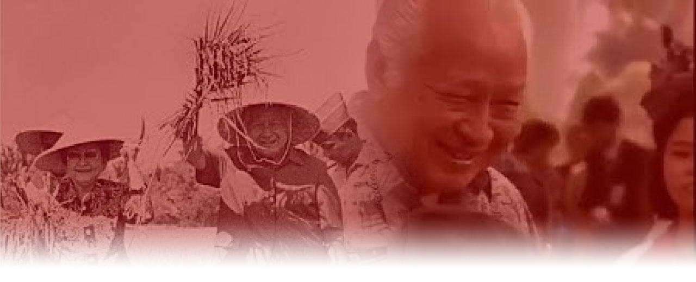

<!DOCTYPE html>
<html lang="en">

<head>
  <meta charset="UTF-8">
  <meta http-equiv="X-UA-Compatible" content="IE=edge">
  <meta name="viewport" content="width=device-width, initial-scale=1.0">

  <link rel="stylesheet" href="style.css">

  <link rel="stylesheet" href="https://cdn.jsdelivr.net/npm/bootstrap-icons@1.5.0/font/bootstrap-icons.css">


  <title>Sejarahku | Masa Orde Baru di Indonesia</title>
</head>

<body>

  <!---==================Navbar==================--->

  <nav>
    <div class="logo">
      <h4>Masa Orde Baru di Indonesia</h4>
    </div>

    <ul class="nav-links">
      <li><a href="../../index.html#materi">Back</a></li>
      <li><a href="#home">Home</a></li>
      <li><a href="Bagian Materi/Karakteristik.html">Karakteristik</a></li>
      <li><a href="Bagian Materi/Tujuan.html">Tujuan</a></li>
      <li><a href="Bagian Materi/Kebijakan.html">Kebijakan</a></li>
      <li><a href="Bagian Materi/Peran.html">Peran</a></li>
      <li><a href="Bagian Materi/Penyimpangan.html">Penyimpangan</a></li>
      <li><a href="Bagian Materi/Dampak.html">Dampak</a></li>
    </ul>

    <div class="nav-end">
      <a href=""><i class="bi bi-github"></i></a>
    </div>
  </nav>

  <!---==================Navbar==================--->

  <header id="home" class="bagian">
    
    <div class="title">
      <h1>Masa Orde Baru di Indonesia</h1>
      <br></br>
      <p>Halaman ini dibuat oleh <b>SultonAkbar</b></p>
    </div>
  </header>


  <section id="materi">

    <div class="container">


      <br>
      <h2>Pengertian Masa Orde Baru</h2>
      <br>
      <p>Orde Baru seringkali disingkat <b>Orba</b>. Orde Baru bisa diartikan sebagai sebutan bagi masa
        pemerintahan
        Presiden Soeharto di Indonesia. Orde Baru menggantikan Orde Lama yang merujuk kepada era pemerintahan
        Presiden
        Sukarno.</p>

      <p> Lahirnya Orde Baru diawali dengan dikeluarkannya Surat Perintah Sebelas Maret (Supersemar) Orde Baru
        berlangsung
        dari tahun 1966-1988 (32 tahun lamanya). Ini tercatat sebagai salah satu rezim (sebuah pemerintahan yang
        dipimpin
        oleh seorang pemimpin) terlama di dunia</p>

      <br>
      <br>
      <br>
      <br>

      <h2>Latar Belakang Lahirnya Orde Baru</h2>
      <br>
      <p>Pasca Tragedi G30S 1965 situasi menjadi kacau dan serba Chaos Front Pancasila
        (KAMI, KAPI, KAPPI, KASI, dll.) Bersama rakyat berdemonstrasi, sehingga Kabinet
        Dwikora Pimpinan Soekarno menjadi goyah mereka mengeluarkan Tritura, tapi
        tidak direspon oleh Soekarno.</p>

      <p>Soekarno kian di desak oleh Militer untuk turun jabatan. Soekarno juga mulai sakit-sakitan, Keluarlah
        Supesemar,
        Soeharto berwenang mengendalikan situasi bahkan kekuasaan . Ia lalu mengabulkan (Merealisasikan) isi
        Tritura.
        Pamornya kian tinggi, sedangkan Soekarno mulai kehilangan dukuangan MPRS meminta pertanggungjawaban
        Soekarno
        atas
        peristiwa G30S. Lalu dilakukan siding Paripurna MPRS Nawaksara (Pidato 9 butir pertanggungjawaban
        Soekarno)
        ditolak
        MPRS siding berlanjut, Soekarno dominta merevisi Nawaksara. Tapi, pelengkap Nawaksara juga ditolak MPRS
        akhirnya,
        keluar TAP MPRS No. XXXIII/MPRS/1967 yang mencabut mandate Presiden Soekarno dan mengangkat Soeharto
        sebagai
        pejabat
        Presiden Orde Lama Soekarno tumbang, Beralih lahirnya Orde Baru</p>

      <br>
      <br>
      <br>
      <br>

      <h2>Faktor Pendukung/Penyebab Lahirnya Orde Baru</h2>
      <br>
      <p>Soekarno kian di desak oleh Militer untuk turun jabatan. Soekarno juga mulai sakitsakitan, Keluarlah
        Supesemar,
        Soeharto berwenang mengendalikan situasi bahkan kekuasaan . Ia lalu mengabulkan (Merealisasikan) isi
        Tritura.
        Pamornya kian tinggi, sedangkan Soekarno mulai kehilangan dukuangan MPRS meminta pertanggungjawaban
        Soekarno
        atas
        peristiwa G30S. Lalu dilakukan siding Paripurna MPRS Nawaksara (Pidato 9 butir pertanggungjawaban
        Soekarno)
        ditolak
        MPRS siding berlanjut, Soekarno dominta merevisi Nawaksara. Tapi pelengkap Nawaksara juga ditolak MPRS
        akhirnya,
        keluar TAP MPRS No. XXXIII/MPRS/1967 yang mencabut mandate Presiden Soekarno dan mengangkat Soeharto
        sebagai
        pejabat
        Presiden Orde Lama Soekarno tumbang, Beralih lahirnya Orde Baru</p>

      <br>

      <ul>
        <li><b>Terjadi G30S dan lenyapnya PKI.</b>
          <br>
          <br>G30S menjadi awal kejatuhan Orde Lama. Peristiwa ini membuat pihak militer sayap kanan (Soeharto
          dkk) bisa
          punya pengaruh besar karena kelompok A. Yani dkk sudah tersisihkan (korban G30S) dan PKI yang adalah
          musuh
          utama
          militer (TNIAD) dituduh sebagai pelaku G30S dan segera akan dilenyapkan. Yang tersisa kini hanya
          Sukarno yang
          teus
          ditekan pihak militer dan kian minim dukungan.</br></li>
      </ul>

      <br>

      <ul>
        <li><b>Keluarnya TRITURA.</b>
          <br>Situasi kacau pasca G30S membuat masyarakat dan kaum intelektual (mahasiswa) turun ke jalan
          melakukan
          demonstrasi dan melahirkan Tritura, yang isi utamanya adalah membubarkan PKI.</br></li>
      </ul>

      <br>

      <ul>
        <li><b>Tritura TIDAK DIRESPON Sukarno.</b>
          <br>Isi Tritura seakan tidak direspon Sukarno karena ia tidak menemukan alasan logis untuk
          membubarkan PKI
          sebab
          menurutnya hanya para pimpinan utama PKI saja yang terlibat G30S ditambah beberapa pihak lainnya,
          bahkan dari
          militer sendiri sedangkan para anggota PKI lainnya tidak terlibat. Gara-gara ini (ditambah
          propaganda
          militer),
          Sukarno dianggap terkesan masih mendukung PKI, padahal rakyat ingin PKI dibubarkan.</br></li>
      </ul>

      <br>

      <ul>
        <li><b>Sukarno masih PRO PKI, tapi rakyat ingin PKI dibubarkan.</b>
          <br>(penjelasan diatas)</br></li>
      </ul>

      <br>

      <ul>
        <li><b>Keluarnya SUPERSEMAR .</b>
          <br>Tekanan dari rakyat dan utamanya pihak militer membuat Sukarno “terpaksa” menandatangani
          Supersemar yang
          disalahartikan oleh Soeharto sebagai pemberian/ peralihan kekuasaan. Dengan Supersemar, Soeharto
          yang didukung
          penuh militer berhasil mengabulkan isi Tritura; ia memberantas PKI sampai tak tersisa.</br></li>
      </ul>

      <br>

      <ul>
        <li><b>Sukarno SAKIT KERAS.</b>
          <br>Dianggap pahlawan dan mengabulkan isi Tritura, pamor Soeharto kian tinggi di mata masyarakat.
          Sebaliknya
          Sukarno kian redup pamornya dan pendukungnya terpecah. Saat itu, kebetulan Sukarno juga mulai
          sakit-sakitan.
          Upaya
          deSukarnoisasi mulai dilakukan Soeharto untuk menghilangkan peran Bung Besar.</br></li>
      </ul>

      <br>

      <ul>
        <li><b>PAMOR SOEHARTO naik dan dapat kepercayaan masyarakat.</b></li>
      </ul>

      <br>

      <ul>
        <li><b>DESUKARNOISASI untuk menghilangkan peran Sukarno.</b></li>
      </ul>

      <br>

      <ul>
        <li><b>SOEHARTO DIDUKUNG MILITER.</b></li>
      </ul>

      <br>

      <ul>
        <li><b>NAWAKSARA dan pelengkapnya ditolak MPRS.</b>
          <br>Diminta pertanggungjawabannya atas peristiwa G30S, Sukarno menyusun Nawaksara dan Pelengkap
          Nawaksara
          dalam
          Sidang Paripurna MPRS. Namun, kedua laporan pertanggungjawaban itu ditolak dan Sukarno mesti turun
          jabatan
          melalui
          TAP MPRS No. XXXIII/MPRS/1967 yang mencabut mandat presiden Sukarno dan mengangkat Soeharto sebagai
          pejabat
          presiden. Orde Lama pun runtuh berganti Orde Baru. Menanggapi situasi ini, Sukarno memilih mengalah
          dan tidak
          melawan balik, padahal kalau mau bisa saja sebab pendukung Sukarno masih sangat banyak. Tapi, jiwa
          kenegaraan
          seorang Sukarno terlalu besar. Ia tidak ingin terjadi perang saudara antar sesama bangsa Indonesia
          yang justru
          dapat menghancurkan negara yang sudah ia perjuangkan mati-matian. Sukarno pun turun dan digantikan
          Soeharto</br>
        </li>
      </ul>

      <br>

      <ul>
        <li><b>JIWA KENEGARAAN seorang Sukarno untuk mengalah.</b></li>
      </ul>

      <br></br><br>

    </div>
  </section>

  <!-- ========== FOOTER ========== -->
  <footer>
    <div class="container">
      <div class="top">
        <a href="#utama"><i class="bi bi-house"></i> Home</a> •
        <a href="#materi"><i class="bi bi-journal-text"></i> Materi</a> •
        <a href="#developers"><i class="bi bi-people"></i> Developers</a>
      </div>
      <div class="bottom">
        © 2021 Power Rangers | Made with <i class="bi bi-heart-fill" style="color: red;"></i> in Bali, Indonesia
      </div>
    </div>
  </footer>
  <!-- ========== FOOTER ========== -->

</body>


</html>